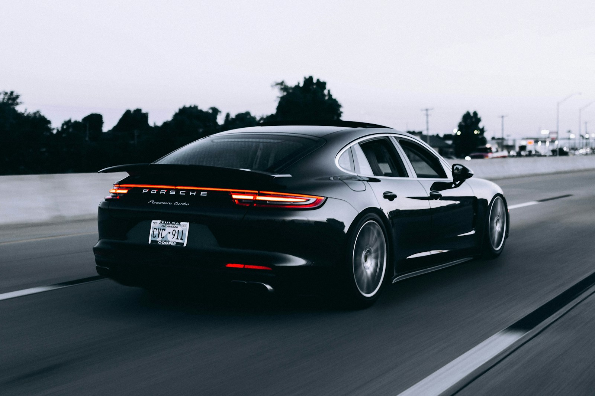

Automotive / An Avalon conceptEngineered for the imagination.
FEEL
THE DRIVE.

Stock image · not a Redline production vehicle01 / Find your point of viewTHREE FORMS.
THREE FORMS.
ONE OBSESSION.
Choose any two imagined vehicles for a side-by-side comparison. Every specification is synthetic, created to demonstrate product discovery.
COMPARE / 0 OF 2
Select two vehicles to reveal the specification sheet.
02 / The everyday drive, reimaginedWHAT DOES
WHAT DOES
YOUR WEEK
LOOK LIKE?
Explore how distance and charging price affect a simplified energy-cost scenario. This is illustrative arithmetic, not a real efficiency or ownership forecast.
R1 ELECTRIC / SYNTHETIC BASELINE
36kWh / week
Illustrative energy cost£10.80
200 km × 18 kWh / 100 km × £0.30
Excludes charging losses, weather, tariffs, insurance and other ownership costs.03 / The design languageQUIET LINES.
QUIET LINES.
LOUD INTENT.
A purposeful surface. A precise detail. An interface that gets out of the way. Redline imagines a digital showroom with the same clarity as the machines it celebrates.
- 01 / FORM
- Purpose before ornament.
- 02 / FEEL
- Information with momentum.
- 03 / FOCUS
- The driver at the centre.
IS YOURS.EXPLORE AGAIN ↗